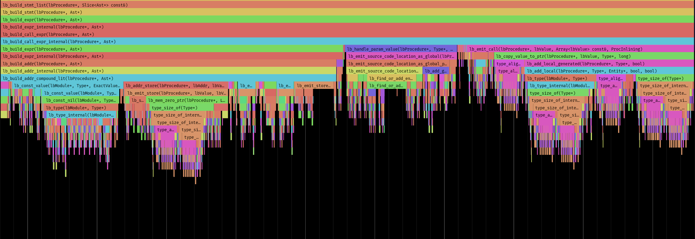

Developer Tools
Spall
Spall is a profiler and code exploration tool, designed to help you sift through billions of events
Future Projects - Sneak Peek
Debugging Should Be Legible

Why don't we have good syntax highlighting for assembly?
We use syntax highlighting in many higher-level languages daily, to make it easier to quickly scan and follow code flow. It's time to bring disassemblers up to speed with modern, 80s technology. Register motion matters, when things go wrong, a little color helps you figure out what happened, fast.
History Matters

When dissecting real catastrophes, inspectors build out a timeline and attempt to retrace footsteps. Debugging code should work the same way.
We track the how your program changes registers and memory as it runs, save all your syscalls, and allow you to replay your code exactly the way it failed, so you can reliably walk backwards from the problem to find the cause.
Data Has A Shape

Real data has striations, character, and personality. Really understanding a problem might require a new way of looking at your code or your dataset.
We try to provide the tools to visualize your problem in a handful of new, unique ways, to help you build strong intuition about your problems. This is a real ELF binary with large static tables of content, plainly visible when displayed as a greyscale image.